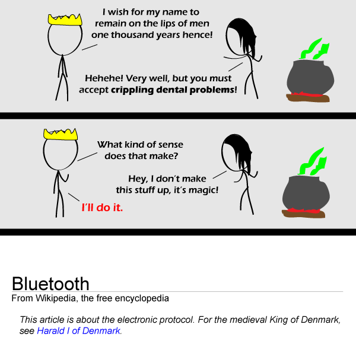

Comic JK 642
When I Feel Like It
⇤
<
?
>
⇥

⇤
<
?
>
⇥
Forum
.
RSS
.
Digg
.
Facebook
.
Reddit
.
Twitter
.
Stumbleupon
Enter your thoughts on number 642 here. Please, no spamming, trolling, phreaking, or dental hygiene. Your mother has the same nickname for the same reason. Best one in a while Wow. For a second I thought the third panel was actually an ad, and didn't get the joke. Then I read the ad - and guess what? It was all about Dental Hygiene/Implants etc :D Technically the spell failed. The Bluetooth protocol wasn't invented until 1994, and Bluetooth died in 985 or 986. It was roughly 1008 years later that his name came back to the lips of men. Thus, it was not on the lips of men 1000 years hence, even if this is the day before his demise. (Or the alternate form of failure - for most of those 1000 years, the name was not well known either by the king or the protocol, and thus it did not remain.) That said, I am barely containing laughter even after looking up those dates. >Haven't you ever heard of significant figures? >>Also, maybe they lost count during the dark ages... >>>or, they were using binary... >>>> And you know "hence" >Wasn't it agreed at some point that the year is actually off by some set number due to a bunch of calendar changes? Incidentally my groupon today is "184% off at Advanced Dental" >They are paying you? Sounds like a good deal to me >>Yeah dude you really need it Who else just checked Wikipedia to see if the last panel is accurate? >Not me. Is it accurate? >>It is. Clearly the sorceror made an "off-by-2" error... for though the name Harald Bluetooth may not have been commonly spoken during those thousand years, the name of his grandson has been: Cnut ( also known as Canute )